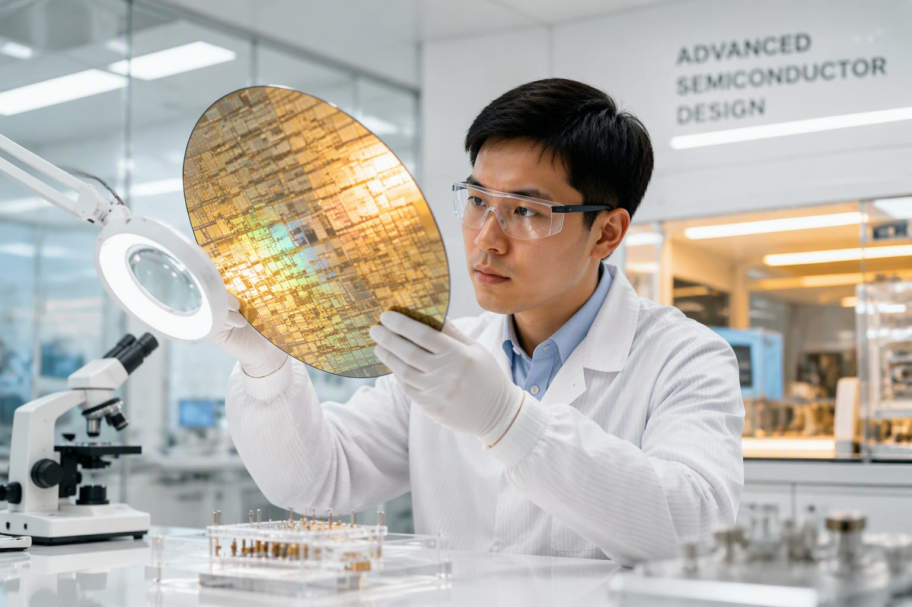

The Claude lab is hiring for custom silicon — the next stage of the compute vertical-integration race that Nvidia’s customers all eventually start.

Anthropic has confirmed it is building its own AI chips for Claude — joining the compute vertical-integration race that every large lab eventually enters.
A dedicated custom-silicon team is now part of Anthropic’s infrastructure strategy, reducing dependency on any single GPU vendor for Claude’s training and serving.
The move mirrors Google (TPU), Amazon (Trainium) and Microsoft (Maia) — hyperscale AI economics eventually make custom silicon the cheaper path.
Compute cost is the gross-margin story of every AI company; owning silicon is how the frontier labs defend margins as models scale.
For Nvidia, every customer that becomes a competitor is a data point on the concentration risk of its $96B quarter.
Every big AI customer eventually tries to become its own Nvidia.
“Anthropic confirmed in early August 2026 that it is building its own AI chips for Claude — joining the custom-silicon race.”